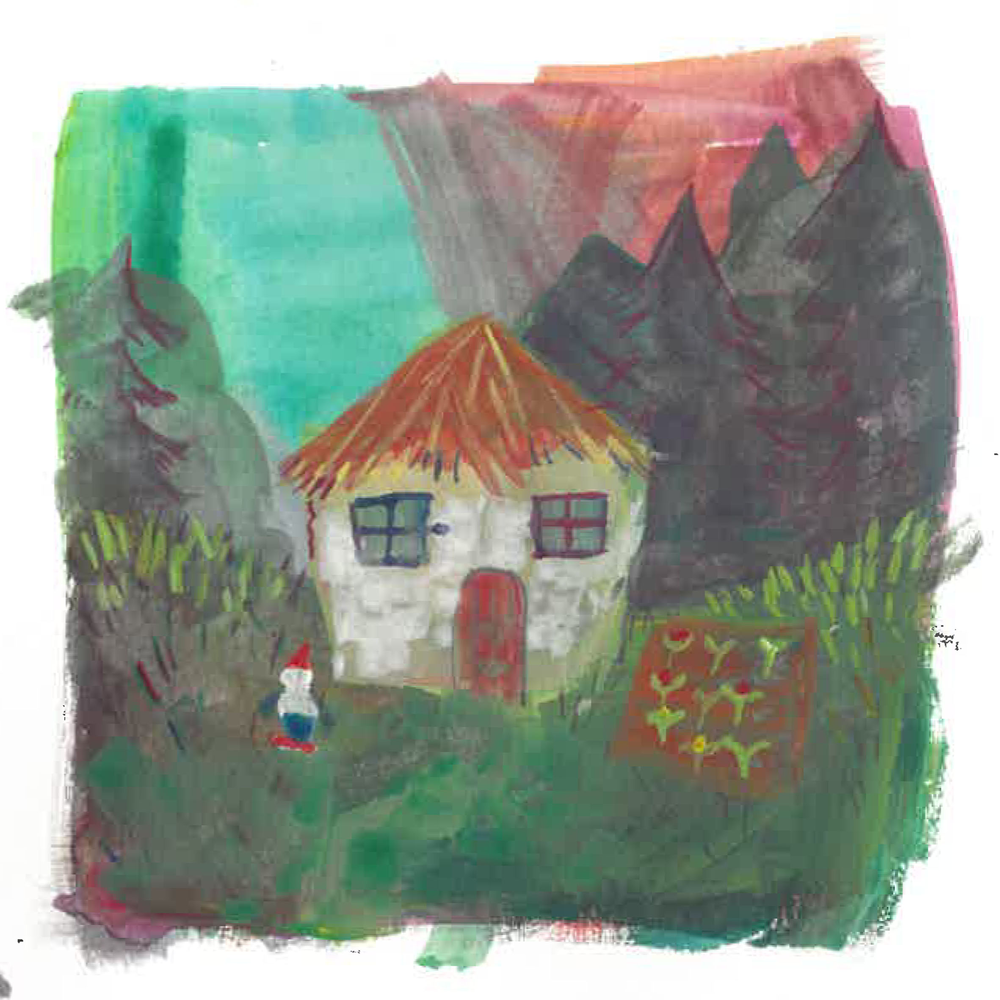
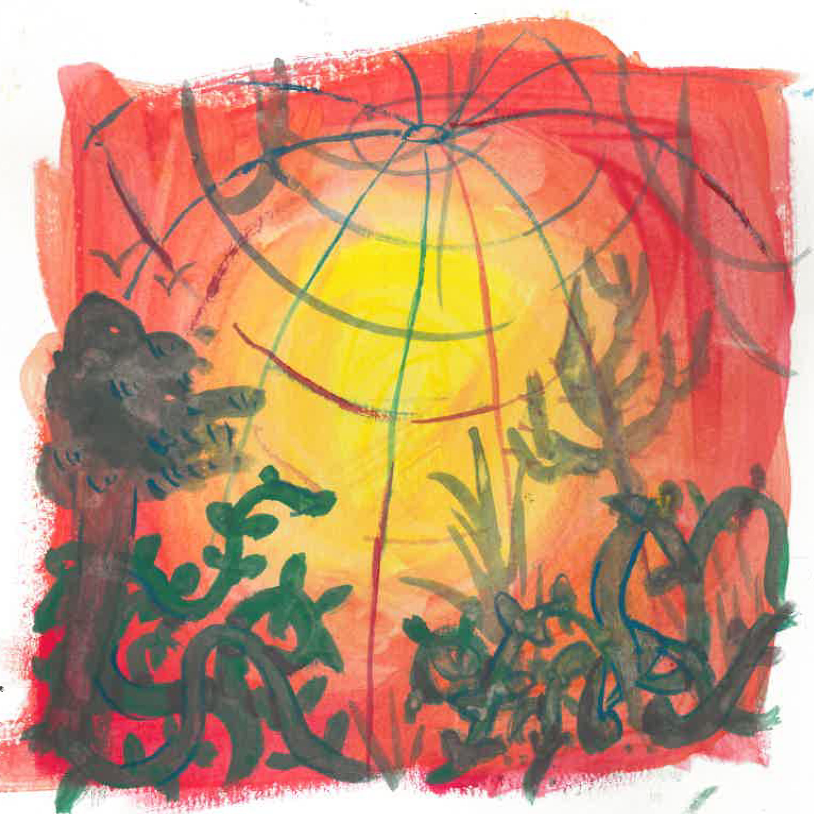
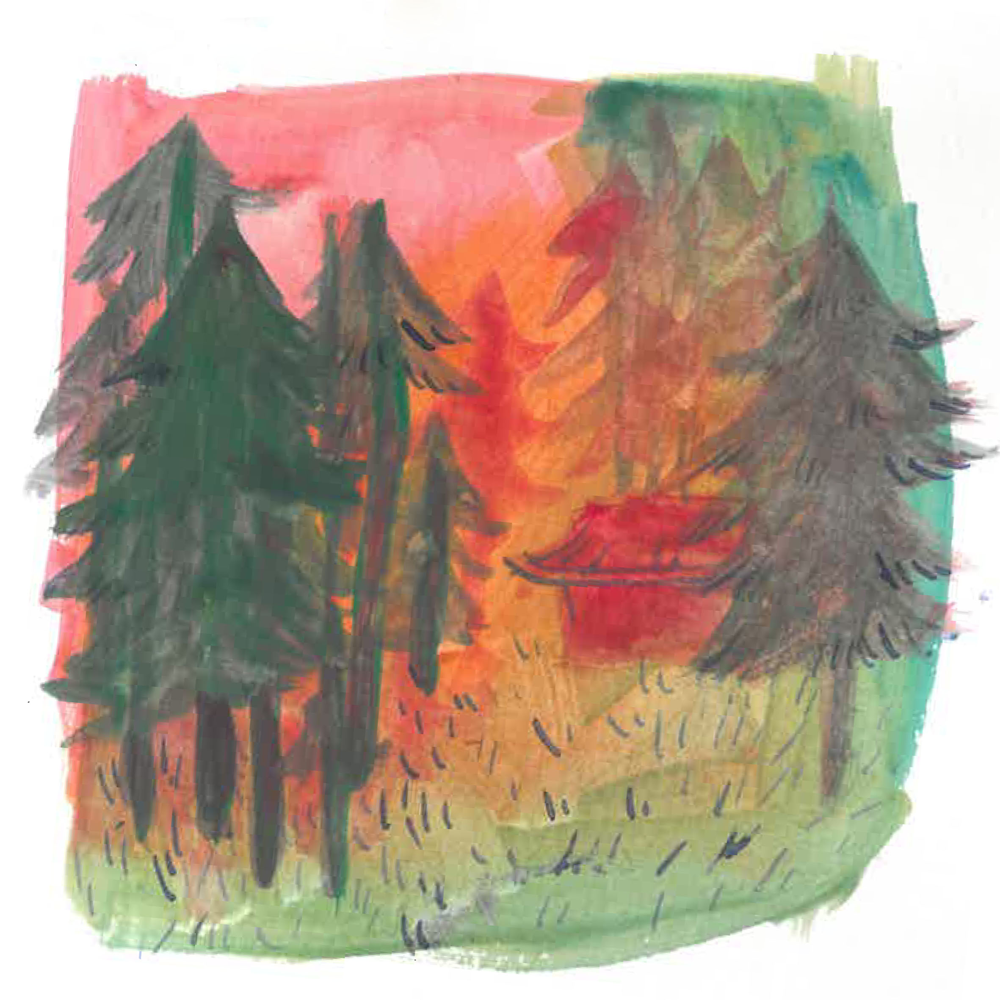
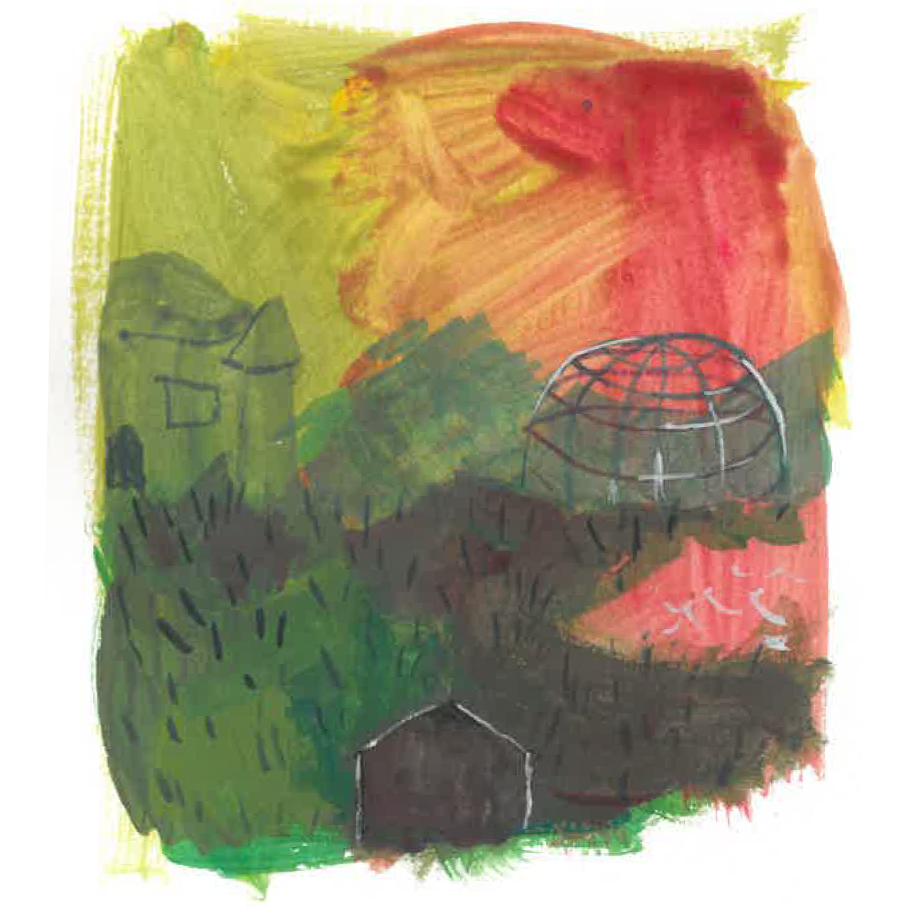
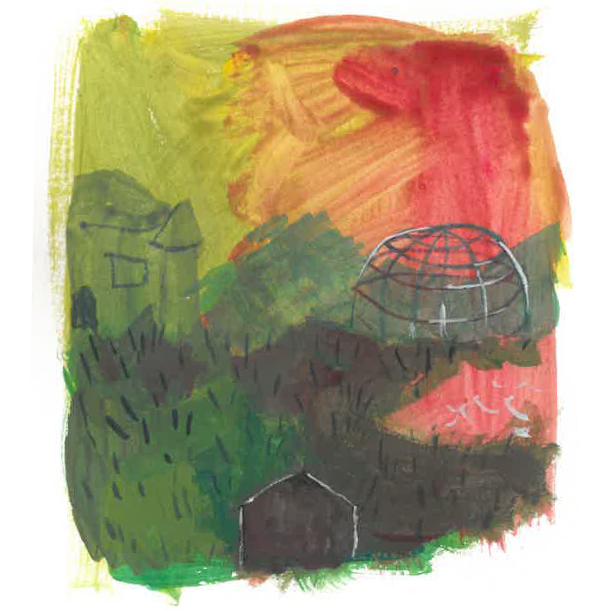
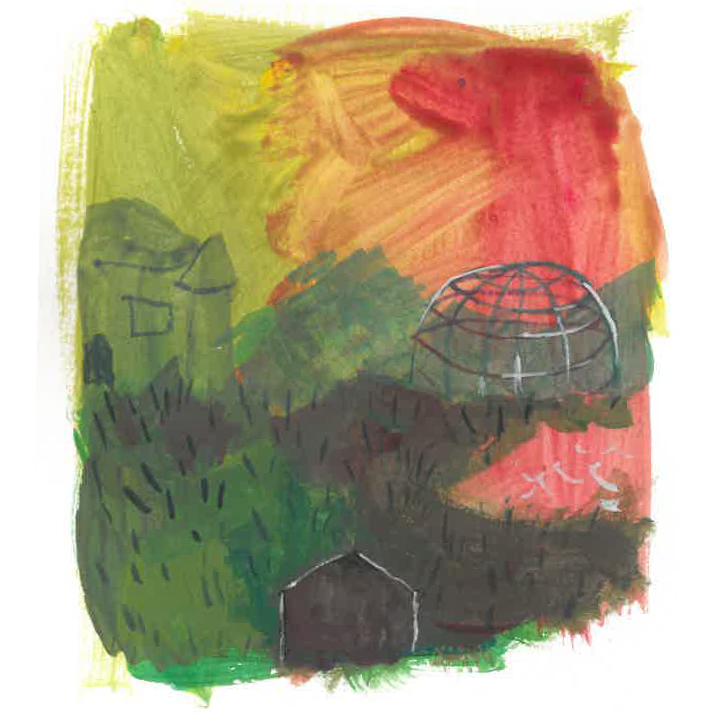
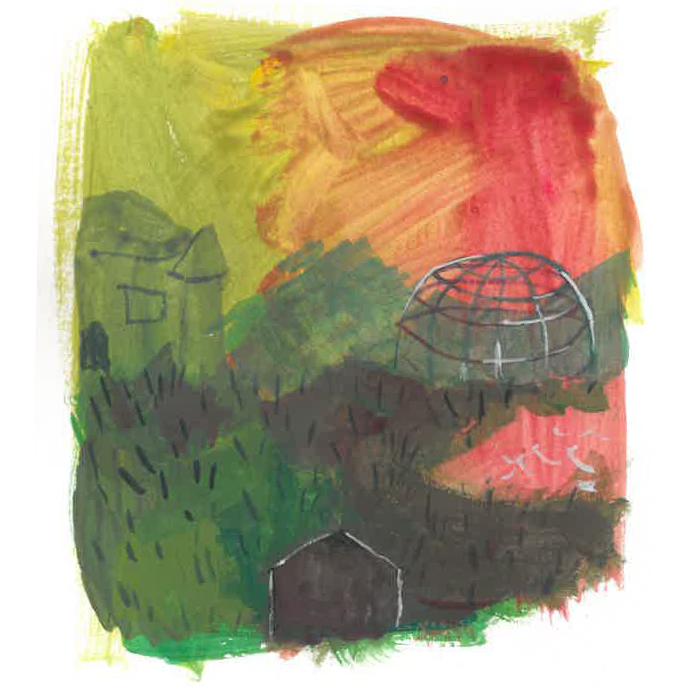

 



Réalisé au cours d’un workshop sur P5.js (un site de programmation), ce jeu point and click a pour but de matérialiser le monde imaginaire d’une personne atteinte de trouble dissociatif de l’identité. J’ai monté ce projet avec mon amie Mosa, concernée par ce trouble, afin de mieux la comprendre et d’explorer son espace intérieur, dont elle me parle souvent. Les musique on été realisées par une IA afin de voir comment elle allait interpeter mes images. L'ajout de son permet aussi de ralentir la progression du visiteur et l'inciter a contempler chaque image et musiques. Vous pouvez tester le jeu ici!